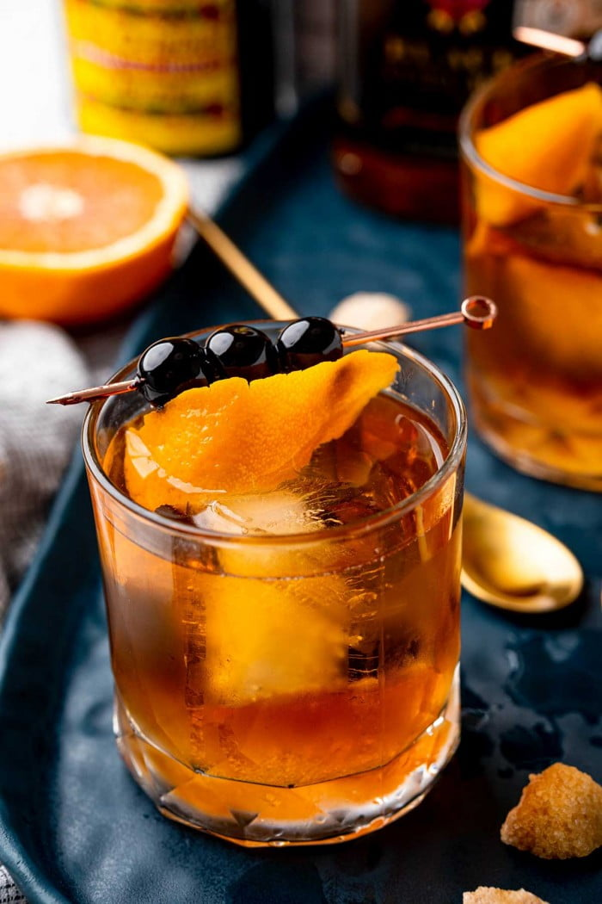

Old Fashioned

What is this dish?
The Old Fashioned is an age-old, tried-and-true cocktail. A simple blend of whiskey, simple syrup, bitters, and orange. Sometimes a cherry. This recipie isn't anything revolutionary, but it is refreshing.
Ingredients
-
1.5 oz of whiskey of your choice (I usually prefer bourbon. If you're not sure what kind, Bulleit is usually more than acceptable.)
-
1 tsp of simple syrup
-
1 tsp cold water
-
2 dashes of aromatic bitters
-
Twist of orange peel
-
A couple large ice cubes (or one of those giant cocktail ones, if you have the means)
-
1 cocktail cherry (I actually don't recommend maraschino cherries, they're too sweet)
Steps
-